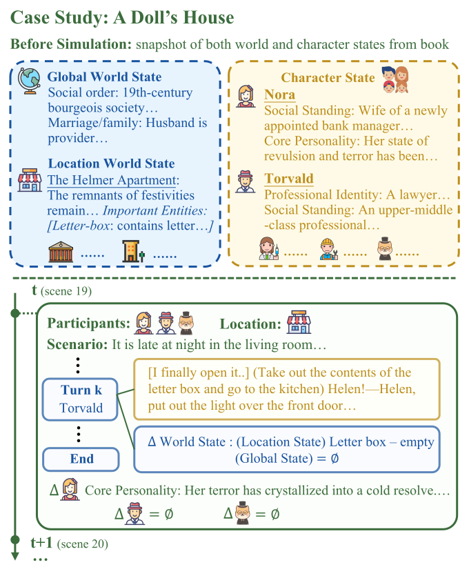
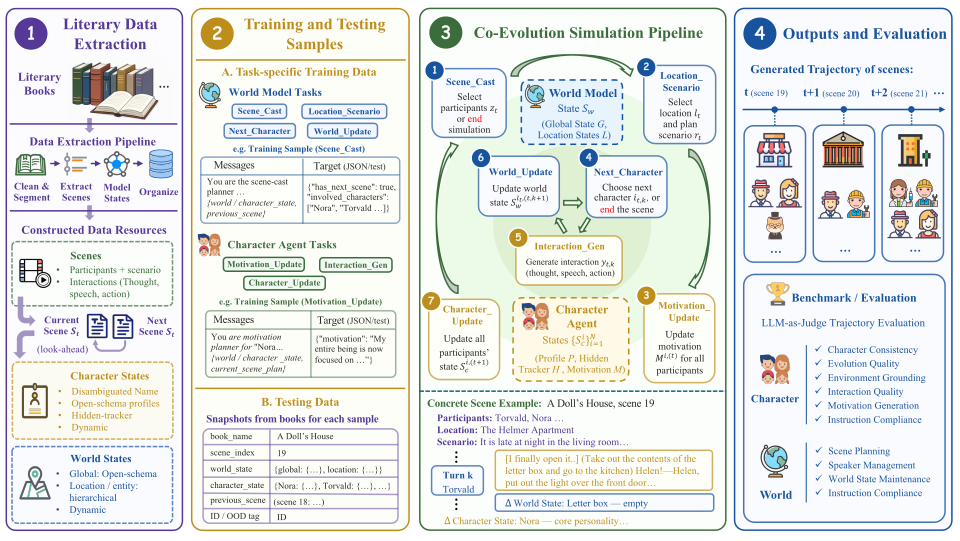
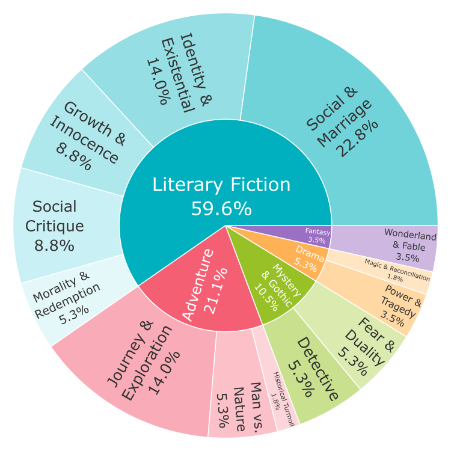
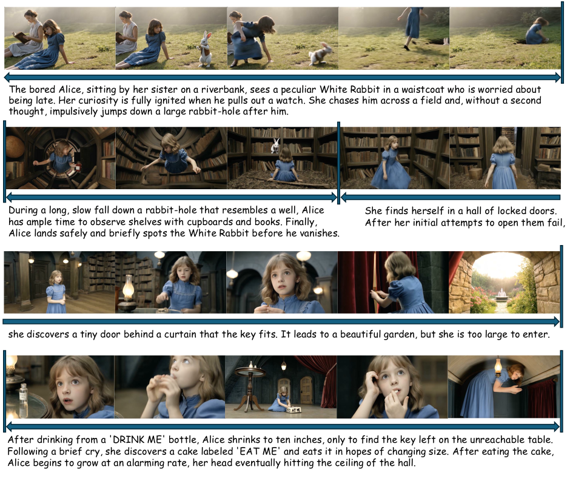

Paper
Paper Code
Code Dataset
DatasetCharacter–World Co-Evolution
A Character Agent and World Model jointly maintain persistent states across scenes, so interactions have lasting effects on both characters and their world.
EvolvingWorld is a framework and benchmark for character and world co-evolution in interactive literary worlds. It models literary simulation as a long-horizon process where characters interact, scenes progress, and character and world states are persistently updated.
Unlike prior systems relying on fixed schemas, EvolvingWorld supports diverse literary worlds through two coupled modules: a Character Agent for multi-character role-play and persistent profile evolution, and an LLM-based World Model for global and location/entity-level state maintenance and scene progression.

Data construction, training and testing samples, the co-evolution simulation pipeline, and trajectory-level evaluation.

Character actions can reshape locations or social orders, while world changes can in turn alter motivations and profiles.
A Character Agent and World Model jointly maintain persistent states across scenes, so interactions have lasting effects on both characters and their world.
The system infers relevant character and world dimensions from each book instead of forcing diverse stories into fixed slots.
A hidden tracker stores weak or emerging evidence before it is sufficient to update slower-changing profile dimensions.

We separately evaluate the effect of EvolvingWorld training data and the effectiveness of the co-evolution framework.
Across matched backbones and model scales, EvolvingWorld training substantially improves both Character Agent and World Model performance over untrained baselines, with stable gains on unseen books. The EvolvingWorld-trained 32B Qwen model even surpasses several proprietary models, including Claude-4.6-Sonnet and Gemini-2.5-Flash.

Figure 3 tracks Profile Evolution Smoothness (PES, top) and Scene Continuity & Coherence (SCC, bottom) as the number of simulated scenes increases.
BookWorld degrades on both metrics over longer trajectories. In contrast, EvolvingWorld maintains scene continuity while its profile evolution becomes smoother across both evaluated backbones. This shows that persistent Character Agent and World Model state updates reduce profile drift and coherence decay in long-horizon simulation.
57 books, 138,596 supervised training samples, 222 test snapshots, and trajectory-level evaluation across 20 metrics.



Structured trajectories produced by EvolvingWorld can be used for interactive simulation and downstream video generation.
Full EvolvingWorld demo · 02:25

Data and code are available through the links above.
@article{zong2026evolvingworld,
title={EvolvingWorld: An Open-Schema Framework for Co-Evolving Role-Play Agents and World Model in Interactive Literary World},
author={Zong, Qing and Guo, Yue and Yang, Mengxin and Guo, Yiwen and Song, Yangqiu},
journal={arXiv preprint arXiv:2607.17250},
year={2026}
}